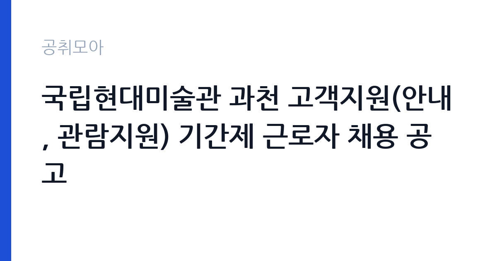

[국가기관] 국립현대미술관 과천 고객지원(안내, 관람지원) 기간제 근로자 채용 공고
문화체육관광부 국립현대미술관 과천관운영부 · 경기 · 마감 2026-10-26 (D-7) · 출처 나라일터

한눈에 보는 모집 조건
| 기관 | 문화체육관광부 국립현대미술관 과천관운영부 |
|---|---|
| 공고명 | 국립현대미술관 과천 고객지원(안내, 관람지원) 기간제 근로자 채용 공고 |
| 고용형태 | 기간제 |
| 근무지 | 경기 |
| 게시일 | 2026-10-19 |
| 마감일 | 2026-10-26 (D-7) |
지원자격, 이렇게 읽으세요
- 기간제근로자 16명
- 접수 ~2026-10-26 마감
- 세부 조건은 원문 공고문 확인
모집분야는 고객지원, 세부 직무는 안내와 관람지원입니다. 인원은 안내 1명, 관람지원 15명으로 총 16명입니다. 채용형태는 기간제근로자입니다. 응시자격의 세부 기준, 즉 학력과 경력, 우대사항은 첨부 공고문에 있으므로 원문을 확인해야 합니다. 접수 마감이 2026년 10월 26일 오후 4시로, 다른 공고보다 이른 시간에 마감된다는 점을 주의하십시오. 접수 기간 외에는 접수가 불가능하다고 공고에 명시돼 있습니다. 서류전형 합격자는 10월 30일에 미술관 홈페이지 공고로 발표되고, 면접 일정은 그때 함께 공지됩니다.
이 공고의 포인트
이 공고의 가장 큰 매력은 인원입니다. 16명을 한 번에 뽑기 때문에, 관람지원 직무는 경쟁 부담이 상대적으로 낮습니다. 두 번째는 근무지와 기관입니다. 국립현대미술관 과천관은 서울 대공원 인근에 있어 수도권에서 접근이 가능하고, 국가 기관 소속이라 근무 조건이 안정적입니다. 세 번째는 직무의 성격입니다. 안내와 관람지원은 전시를 직접 대면하는 업무로, 미술관이나 문화예술 분야로 진로를 잡은 지원자에게 실무 경험이 됩니다. 다만 기간제이므로 계약 기간을 확인하고, 전시 일정에 따라 주말 근무가 포함되는지도 살펴야 합니다.
전형은 어떻게 진행되나
전형은 서류전형과 면접심사로 진행됩니다. 서류접수는 10월 20일부터 26일 오후 4시까지이고, 서류전형 합격자는 10월 30일에 미술관 홈페이지를 통해 발표됩니다. 면접 일정과 장소는 서류 합격자 발표 시 함께 공지됩니다. 채용예정일은 11월 12일입니다. 응시인원과 시험장 사정에 따라 일정이 변동될 수 있다고 공고에 적혀 있으므로, 홈페이지 공고를 수시로 확인하십시오. 16명을 뽑는 만큼 면접이 여러 날에 걸쳐 진행될 수 있습니다.
원문에서 확인한 전형 방식
국립현대미술관 과천에서 역량 있는 인재를 다음과 같이 공개 모집하오니, 많은 지원 바랍니다. 1. 채용분야/인원 ㅇ 채용분야: 고객지원 근로자(안내, 관람지원) ㅇ 채용인원: 16명(안내1, 관람지원15) ㅇ 채용형태: 기간제근로자 2. 전형일정 가. 서류접수: 2026.10.20.(화) ~ 2026.10.26.(월) 16:00까지 ※ 접수기간 외 접수 불가 나. 관련문의 ㅇ 국립현대미술관 과천관운영부 채용담당자(02-2188-6239) 다. 서류전형 합격자 발표: 2026.10.30.(금), 국립현대미술관 홈페이지 공고 라. 면접심사: 서류전형 합격자 발표 시 일정 및 장소 공지 마. 채용예정일: 2026.11.12.(목), 국립현대미술관 홈페이지 공고 ※ 응시인원, 시험장 사정, 서류검증, 소요기간 등에 따라 일정이 변동될 수 있으며 기타 자세한 사항은 공고문을 참고하시기 바랍니다.
이런 분께 추천해요
- 경기 과천으로 출퇴근이 가능한 분 — 과천관 근무입니다
- 미술관·문화예술 분야 실무를 경험하고 싶은 분 — 안내·관람지원 직무입니다
- 주말·공휴일 근무가 가능한 분 — 미술관 운영 특성상 필요합니다
지원 전 체크리스트
- 마감이 2026-10-26 16시라는 점을 확인했는가 — 다른 공고보다 이릅니다
- 안내와 관람지원 중 어느 직무로 지원할지 정했는가
- 주말·공휴일 근무 가능 여부를 확인했는가
- 첨부 공고문의 응시자격과 제출서류를 대조했는가
모집 일정과 제출 타이밍
마감은 2026년 10월 26일 오후 4시입니다. 접수 시작이 10월 20일이므로 준비 기간은 일주일입니다. 서류 발표가 10월 30일, 채용예정일이 11월 12일이므로 전형이 빠르게 진행됩니다. 권장 일정은 첫날 공고문을 확인하고, 이틀 안에 지원서를 작성해 제출하는 것입니다. 면접이 잡히면 발표까지 시간이 짧으므로, 미술관의 현재 전시와 운영 프로그램을 미리 살펴보십시오. 면접에서 관람객 응대 상황을 가정한 질문이 나올 수 있습니다.
직무 이해하기: 국가기관
국립현대미술관 과천관은 대규모 전시와 야외 조각공원을 함께 운영하는 공간입니다. 고객지원 근로자는 관람객을 직접 대면하는 업무를 맡습니다. 안내 직무는 종합안내소에서 관람 동선과 전시 정보를 안내하고, 전화 문의와 민원에 응대합니다. 관람지원 직무는 전시장 입구에서 관람객을 맞고, 작품 보호를 위한 관람 예절을 안내하며, 단체 관람과 교육 프로그램을 지원합니다. 전시장 안전과 작품 보호가 중요하므로, 관람객이 작품에 가까이 접근할 때 정중하게 제지하는 대응력이 필요합니다. 주말과 공휴일에 관람객이 몰리므로 교대 근무가 이뤄집니다.
자기소개서 작성 팁
이 공고의 자기소개서는 관람객 응대 경험과 문화예술에 대한 이해를 함께 보여줘야 합니다. 첫 문단에 지원 직무와 지원 동기를 한 문장으로 쓰십시오. 본론에서는 사람을 응대한 경험을 구체적으로 적으십시오. 매장, 카페, 행사 운영, 안내 데스크 같은 경험이 모두 소재가 됩니다. 특히 불만을 가진 사람을 응대해 상황을 정리한 사례는 좋은 평가를 받습니다. 미술관에 관심이 있다면 최근 관람한 전시나 인상 깊었던 작품을 한 줄로 언급하는 것도 좋습니다. 마무리에는 관람객이 편안하게 작품을 감상할 수 있도록 돕겠다는 의사를 밝히십시오.
면접 준비 포인트
면접은 응대 상황을 가정한 질문이 중심입니다. 관람객이 작품을 만지려 할 때 어떻게 하겠는지, 촬영 금지 구역에서 촬영하는 관람객을 어떻게 설득할지, 단체 관람객이 질서를 지키지 않을 때 어떻게 대응할지가 단골 질문입니다. 답할 때는 정중함과 원칙을 함께 보여주십시오. 작품 보호가 우선이지만 관람객의 기분을 상하게 하지 않는 방식으로 설명해야 합니다. 또한 주말 근무와 서 있는 시간이 긴 근무에 대한 적응력을 확인합니다. 밝은 표정과 또렷한 발음도 평가에 영향을 줍니다.
급여·근무조건 읽는 법
보수는 기간제근로자 보수 기준에 따라 정해지며, 원문 공고문의 처우 항목에 명시됩니다. 이번 공고 본문에는 금액이 공개되지 않았으므로 첨부 공고문에서 확인하셔야 합니다. 기간제근로자는 정규직 보수표가 아니라 별도 단가가 적용되고, 근무 시간과 근무일에 따라 보수가 달라집니다. 미술관 운영 특성상 주말 근무가 포함되므로, 휴일 근무수당이 어떻게 적용되는지 확인하는 것이 중요합니다. 4대 보험은 근로자 신분에 따라 적용되고, 계약 만료 시 퇴직급여가 발생합니다. 계약 기간과 갱신 가능 여부도 원문에서 확인하십시오.
자주 묻는 질문
- 몇 명을 뽑나요?
총 16명입니다. 안내 1명, 관람지원 15명으로 나눠 선발합니다. - 마감 시간이 언제인가요?
2026년 10월 26일 오후 4시입니다. 다른 공고보다 이르므로 주의하십시오. - 정규직인가요?
아닙니다. 기간제근로자로 공고돼 있습니다. 계약 기간과 근무 조건은 원문 공고문에서 확인하십시오.
함께 보면 좋은 공고
[국가기관] 2026년 제5회 국립부곡병원 의무직 공무원 경력경쟁채용시험 공고 — 마감 2026-10-30[국가기관] 한국체육대학교 대학회계무기직원(미화원, 1명) 채용 공고 — 마감 2026-10-30[국가기관] 2026년 수도권대기환경청 기간제근로자 채용 공고 — 마감 2026-10-28출처: 나라일터 공개정보를 바탕으로 공취모아가 정리한 안내글입니다. 모집 조건·일정은 변경될 수 있으니 지원 전 반드시 원문 공고문을 확인하세요. 본 글은 정보 제공용이며 합격을 보장하지 않습니다.